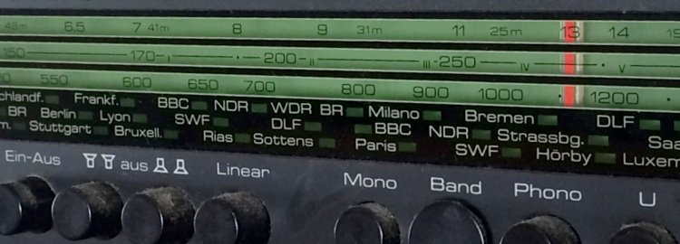

@charak
@charakGeschichten fürs Ohr
Thematisch passend gibt es diesen Artikel auch zum Anhören (Originalversion von 2016):
„Gibt’s das heutzutage überhaupt noch? Und ist das nicht nur was für Kinder?“ – Die Fragen bekomme ich meistens gestellt, wenn ich davon erzähle, wie gerne ich Hörspiele höre.
Zum ersten: Ja, es gibt noch Hörspiele, und zwar eine ganz schöne Menge. Der deutschsprachige Rundfunk hat dafür pro Woche über fünfzig Sendeplätze reserviert. Eine gute Informationsquelle (weil senderübergreifend) ist hier die HörDat. Hinter der etwas nüchternen Weboberfläche steckt eine gut gepflegte Datenbank, mithilfe derer sich aktuelle Ausstrahlungstermine finden lassen. Ich wähle in der Suchmaske als Sendezeitraum meistens die kommende Woche und hake das Kästchen bei „alle Sender“ an. So bekomme ich einen guten Überblick und stelle mir mein Radioprogramm zusammen.
Eine ähnliche Übersicht bietet der Hörspielkalender der ARD (Update 29.1.2022: Link defekt). Zwar beschränkt er sich auf die ARD-Radiowellen, ist meinem Eindruck nach aber vollständiger und genauer. Trotzdem nutze ich diese Programmübersicht kaum, weil sie auf den ersten Blick zu wenige Informationen anzeigt. Ich habe keine Lust, mich für einen schnellen Überblick durch eine Liste aus Klappkästen zu klicken.
Eine dritte Möglichkeit, sich über laufende Hörspiele zu informieren, sind die entsprechenden Programmhefte einzelner Sender. Man kann sich die (in der Regel) halbjährlich erscheinenden Hefte oft sogar kostenlos zuschicken lassen oder als PDF herunterladen. Entsprechende Broschüren gibt es beispielsweise vom Deutschlandradio, vom Bayerischen Rundfunk oder dem SWR (Update 29.1.2022: Link defekt). Natürlich informieren die Sender zusätzlich auf ihren Internetseiten über ihr Hörspielangebot.
Breitgefächertes Hörspielangebot, auch zum Download
Wäre noch die zweite Frage zu klären, ob das nicht nur etwas für Kinder sei. Definitiv nicht. Es gibt sogar Hörspiele, die ganz sicher nicht für Kinder geeignet sind, zum Beispiel viele Produktionen von 1LIVE. Sie enthalten schon mal soviel Sex oder Gewalt, dass der Sendeplatz dienstags/donnerstags um 23 Uhr wirklich gerechtfertigt ist.
Allgemein ist das Hörspielprogramm deutschsprachiger Wellen sehr breit gefächert. Es gibt unter anderem heitere Mundarthörspiele (14-tägig samstags um 21:05 Uhr auf SWR4), atmosphärische oder schräge Klangkunst (freitags, 0:05 Uhr im Deutschlandradio Kultur) und Trash- oder Action-Hörspiele (dienstags, 23 Uhr auf 1LIVE). Dazu natürlich Krimis (samstags, 17:05 Uhr im WDR5), experimentelle Hörspiele (freitags, 21:05 in Bayern2), Kindergeschichten (sonntags, 8:05 Uhr im Deutschlandradio Kultur), Literaturbearbeitungen sowie Kurzhörspiele (werktäglich um 13:10 Uhr, MDR Figaro) … Das sind natürlich nur einige Beispiele.

Und wer „einfach keine Zeit zum Radiohören“ hat, kann viele Hörspiele mittlerweile für eine Woche oder länger online nachhören oder sogar herunterladen. Der Bayerische Rundfunk ist da ein großer Vorreiter und stellt (soweit ich weiß) alle Neuproduktionen zum Download in seinen Hörspielpool – größtenteils etwas sperrige (=anspruchsvolle?) Kost. Auch bei 1LIVE (Krimis, Soundstories) oder dem Schweizer Radio und Fernsehen kann man viele Sendungen finden. Wer Krimis mag, könnte am monatlichen Radiotatort Interesse haben (die Qualität ist so gemischt wie beim Fernsehtatort, mit Perlen und Mist). Die Nachhör-/Download-Angebote aller ARD-Wellen trägt (etwas unübersichtlich) die ARD-Audiothek zusammen. Eine weitere senderübergreifende Übersicht von Download-Hörspielen bietet die Website Radio Today.
Persönliche Tipps
Was ich gerne höre sind unter anderem ältere, klassisch erzählte Krimis, zum Beispiel die Geschichten um Professor van Dusen. Aus urheberrechtlichen Gründen gibt es diese Hörspiele nicht im Internet (Update 2024: Doch, nun lässt sich van Dusen nachhören). Aber einige andere stehen online, zumindest eine Zeitlang. Hier ein paar Empfehlungen:
Action, spannende Wendungen und eine (teils absurde) Geschichte: The Cruise ist ein achtteiliges Hörspiel, in dem sich eine Gruppe Menschen plötzlich allein auf einem riesigen Luxusdampfer wiederfindet. Tolle Sprecher, ziemlich geiles Sounddesign.
Leider kann man „Gras wachsen hören“ nicht mehr nachhören (Update 3.10.2024: Doch!). Das Stück über ein fiktives Pflanzeninstitut stammt vom Liquid Penguin Ensemble, das auch das prämierte Stück Ickelsamers Alphabet produziert hat. (Update 3.10.2024: Audio nicht mehr vorhanden)
Der Atlas der abgelegenen Inseln ist eine Hörspielinszenierung des gleichnamigen Buchs von Judith Schalanski. Teils poetisch, skurril, schön komponiert.
Ein klassischer Krimi im Sport-Milieu ist Tod eines Fußballers. Ein bisschen durchsichtiges Mordmotiv, aber die Ermittlungsarbeit ist unterhaltsam. (Update 3.10.2024: Audio nicht mehr verfügbar)
Kein Hörspiel sondern ein sehr spannendes Feature ist Ouri Jallouh (Update 2024: Erschien neu als Serie). Es untersucht den Todesfall eines Asylbewerbers, der gefesselt in einer Polizeizelle verbrannt ist. Gut recherchiert, sehr gut erzählt.
Wie ist eure Erfahrung mit Hörspielen? Habt ihr Empfehlungen, vielleicht auch für Podcasts? Kennt ihr noch gute Webangebote zu Hörspielen? Ich freue mich über Kommentare!